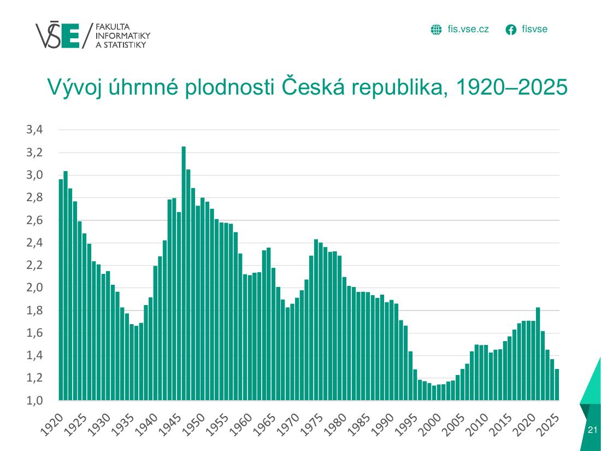

Cvičný test 220 b · 50 min
Teorie 4 b
A–D: 4 uzavřené otázky (po 0,5 b), 2 otevřené (po 1 b).
5. Proč nejsou obecné míry vhodné pro srovnání populací a jak se to řeší?
Správná odpověď
6. Rozdíl mezi hrubou a čistou mírou reprodukce.
Správná odpověď
Úloha 1 – úhrnná plodnost 4 b
Pro daný rok jsou známy počty živě narozených dětí a středního stavu žen. Vypočtěte specifické míry plodnosti, úhrnnou plodnost, hrubou míru reprodukce (δ = 0,485) a potřebnou hrubou úhrnnou plodnost. Interpretujte.
| Věk matky | Živě narození | Ženy |
|---|---|---|
| 15–19 | 210 | 33 200 |
| 20–24 | 1 210 | 31 100 |
| 25–29 | 3 890 | 36 400 |
| 30–34 | 4 950 | 42 900 |
| 35–39 | 2 480 | 49 800 |
| 40–44 | 690 | 61 200 |
| 45–49 | 38 | 58 400 |
Řešení
| Věk | fx |
|---|---|
| 15–19 | 0,00633 |
| 20–24 | 0,03891 |
| 25–29 | 0,10687 |
| 30–34 | 0,11538 |
| 35–39 | 0,04980 |
| 40–44 | 0,01127 |
| 45–49 | 0,00065 |
úp = 5 · Σfx = 5 · 0,32921 = 1,646
RB = 0,485 · 1,646 = 0,798
phúp = úp / RB = 1/0,485 = 2,062
Interpretace: úhrnná plodnost 1,65 znamená 1,65 dítěte na jednu ženu při zachování dnešních měr. To je méně než potřebných 2,06 pro prostou reprodukci (RB 0,80 < 1: nastávající generace dcer nenahradí generaci matek; při zanedbání úmrtnosti).
Úloha 2 – zkrácená úmrtnostní tabulka (ženy, „Kraj Z“) 8 b
Dopočítejte chybějící údaje: A = p25–29, B = l35–39, C = L45–49, D = e10–14. Zadáno q0 = 0,001061 (M0/N = 2/1 885), α = 0,85, l0 = 100 000. Interpretujte e0.
| Věk | h | Mx | Sx | mx | px | lx | dx | Lx | Tx | ex |
|---|---|---|---|---|---|---|---|---|---|---|
| 0 | 1 | 2 | 1 961 | 0,001020 | 0,998939 | 100 000 | 106 | 99 910 | 8 313 334 | 83,1 |
| 1–4 | 4 | 2 | 9 821 | 0,000204 | 0,999186 | 99 894 | 81 | 399 413 | 8 213 424 | 82,2 |
| 5–9 | 5 | 1 | 14 082 | 0,000071 | 0,999645 | 99 813 | 35 | 498 974 | 7 814 011 | 78,3 |
| 10–14 | 5 | 4 | 14 047 | 0,000285 | 0,998577 | 99 777 | 142 | 498 531 | 7 315 037 | D |
| 15–19 | 5 | 3 | 14 585 | 0,000206 | 0,998972 | 99 635 | 102 | 497 920 | 6 816 506 | 68,4 |
| 20–24 | 5 | 4 | 12 639 | 0,000316 | 0,998419 | 99 533 | 157 | 497 270 | 6 318 586 | 63,5 |
| 25–29 | 5 | 5 | 12 623 | 0,000396 | A | 99 375 | 197 | 496 385 | 5 821 316 | 58,6 |
| 30–34 | 5 | 10 | 15 437 | 0,000648 | 0,996766 | 99 179 | 321 | 495 092 | 5 324 931 | 53,7 |
| 35–39 | 5 | 6 | 16 599 | 0,000361 | 0,998194 | B | 179 | 493 844 | 4 829 839 | 48,9 |
| 40–44 | 5 | 18 | 17 246 | 0,001044 | 0,994795 | 98 680 | 514 | 492 114 | 4 335 995 | 43,9 |
| 45–49 | 5 | 37 | 21 404 | 0,001729 | 0,991394 | 98 166 | 845 | C | 3 843 881 | 39,2 |
| 50–54 | 5 | 46 | 20 583 | 0,002235 | 0,988888 | 97 321 | 1 081 | 483 902 | 3 355 164 | 34,5 |
| 55–59 | 5 | 53 | 16 309 | 0,003250 | 0,983883 | 96 240 | 1 551 | 477 320 | 2 871 262 | 29,8 |
| 60–64 | 5 | 91 | 15 736 | 0,005783 | 0,971499 | 94 689 | 2 699 | 466 696 | 2 393 941 | 25,3 |
| 65–69 | 5 | 158 | 15 710 | 0,010057 | 0,950957 | 91 990 | 4 511 | 448 671 | 1 927 246 | 21,0 |
| 70–74 | 5 | 266 | 16 977 | 0,015668 | 0,924649 | 87 478 | 6 592 | 420 913 | 1 478 575 | 16,9 |
| 75–79 | 5 | 384 | 14 681 | 0,026156 | 0,877410 | 80 887 | 9 916 | 379 644 | 1 057 662 | 13,1 |
| 80–84 | 5 | 481 | 9 363 | 0,051372 | 0,773475 | 70 971 | 16 077 | 314 663 | 678 018 | 9,6 |
| 85–89 | 5 | 520 | 4 995 | 0,104104 | 0,594211 | 54 894 | 22 275 | 218 782 | 363 356 | 6,6 |
| 90–94 | 5 | 421 | 2 214 | 0,190154 | 0,386444 | 32 619 | 20 013 | 113 060 | 144 573 | 4,4 |
| 95–99 | 5 | 173 | 469 | 0,368870 | 0,000000 | 12 605 | 12 605 | 31 513 | 31 513 | 2,5 |
Řešení
- A p25–29 = e−5·m = EXP(−5 · 0,000396) = 0,998021
- B l35–39 = l30–34 · p30–34 = 99 179 · 0,996766 = 98 858
- C L45–49 = 5 · (l45–49 + l50–54) / 2 = 5 · (98 166 + 97 321) / 2 = 488 717
- D e10–14 = T10–14 / l10–14 = 7 315 037 / 99 777 = 73,3
Interpretace: e0 = 83,1 → právě narozená dívka se při dnešní úmrtnosti dožije v průměru 83,1 let; to je výrazně víc než u mužů (76,0) – ženská nadúmrtnost mužů.
Interpretace grafu 4 b

Vývoj úhrnné plodnosti ČR 1920–2025. Popište vývoj a vysvětlete příčiny a důsledky.